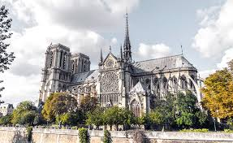
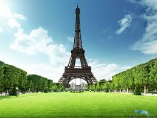

Cобор Паризької Богоматері
Собор Паризької Богоматері недарма вважають одним з найпрекрасніших прикладів французької Готичної архітектури у Франції і в Європі. Пішло два століття, щоб побудувати це диво архітектури та одну з найзнаменитіших Паризьких пам’яток.
Фотографії цього собору не віддають йому належне, Собор Паризької Богоматері варто обов’язково побачити своїми очима. Рівень деталей, поміщених в скульптури, просто фантастичний.
Коли Ви побачите цей собор особисто, то дійсно зрозумієте, чому треба було майже 200 років, щоб побудувати Нотр-Дам-де-Парі!
Ейфелева вежа
Ейфелева вежа одна з найбільш розпізнаваних структур у світі і символ Франції. Якщо Ви не підніметеся на Ейфелеву вежу перебуваючи в Парижі, то втратите дійсно особливий момент у своєму житті. Перебуваючи під основою вежі важко повірити в ці гігантські пропорції, на фотографіях неможливо відчути всю велич і красу цієї структури. Ця пам’ятка Парижа обов’язкова для перегляду.
Ейфелева вежа побудована протягом двох років, у 1887 – 1889 для Виставки Universelle і, як передбачалося, повинна була бути демонтована після заходу.
Але жителям і гостям Парижа вона настільки сподобалася, що вони вирішили залишити її, і тепер це найпопулярніша визначна пам’ятка в Парижі. Вид з вершини вежі відкривається не тільки на все місто, а й на його околиці.